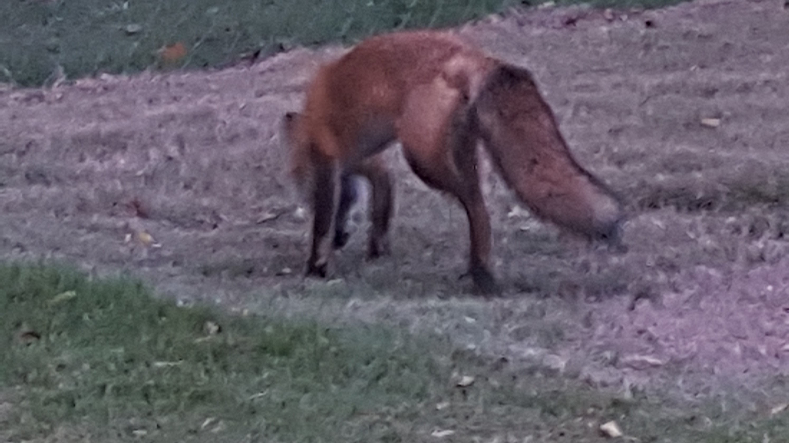
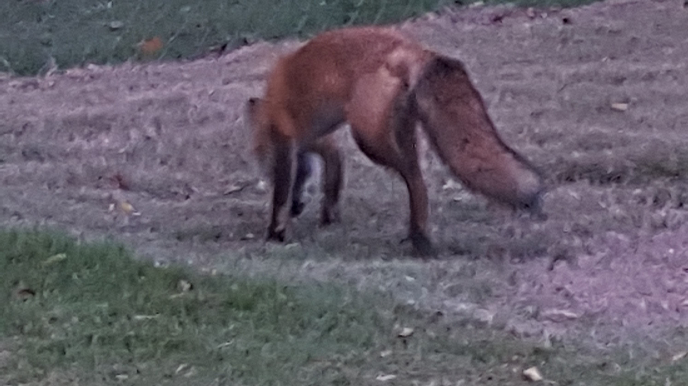

Hardy Brinly Memorial Park
Hardy Brinly Memorial Park is a 7-acre public park, located inside Woodland Hills. Named after a former Woodland Hills mayor, park is trafficked by many due to a nearly half-mile concrete path. The park is used by various teams for practice, in large part due to its backstop and ample space. A creek separates the three sections of the park, and each section is connected by a small bridge. Used for bands at events like summerfest, the gazebo provides a great stage and electrical outlets, and is available to rent for a nominal fee.
The park is also home to various wildlife, including many species of small birds, hawks, and owls, as well as bats, deer, and even the occasional fox. Please be respectful to all wildlife and residents, and be sure to pick up after yourself and your pets.

 
